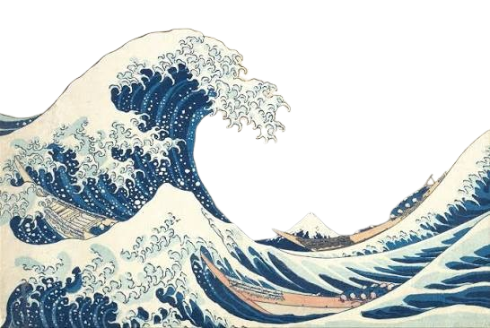
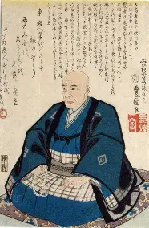

ARTIST PROFILE · JAPAN, EDO PERIOD
Utagawa
Hiroshige

Born: 1797
Died: 1858
Utagawa Hiroshige was a famous Japanese artist who mastered the genre of ukiyo-e, which means “pictures of the floating world” in English. He utilized text and typography, color, texture, contrast, emphasis, and asymmetry. His design techniques appear throughout his artworks.
THE ART OF THE EVERYDAYExplore his story